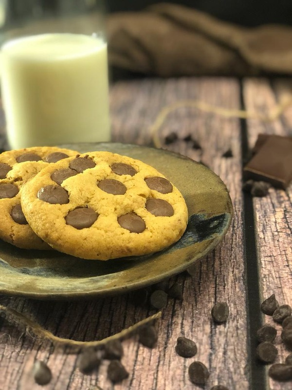
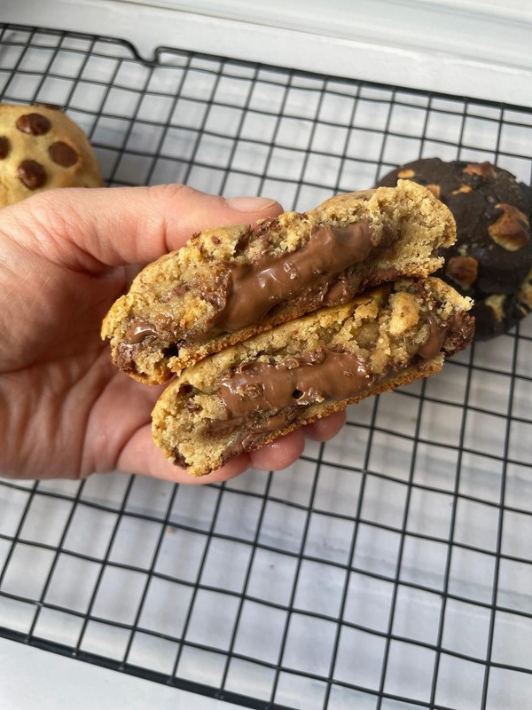
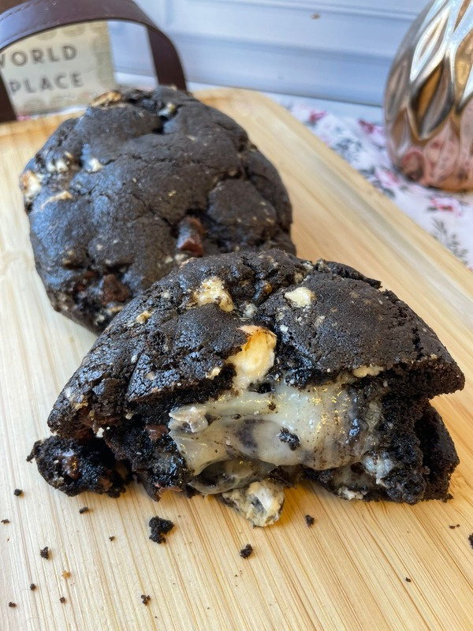
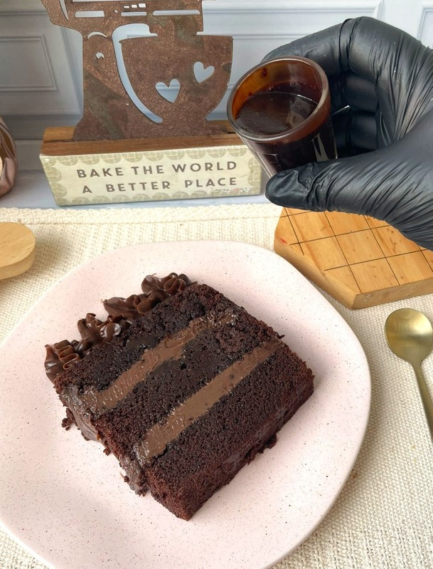
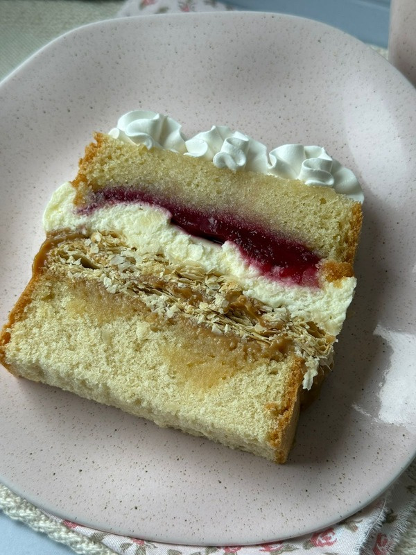
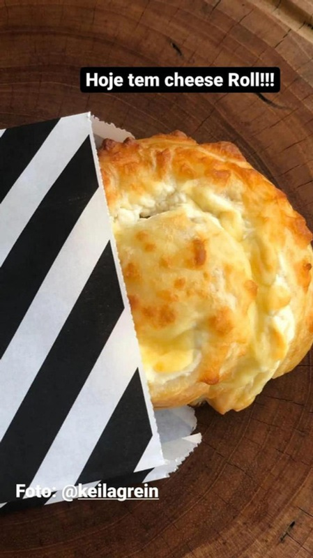
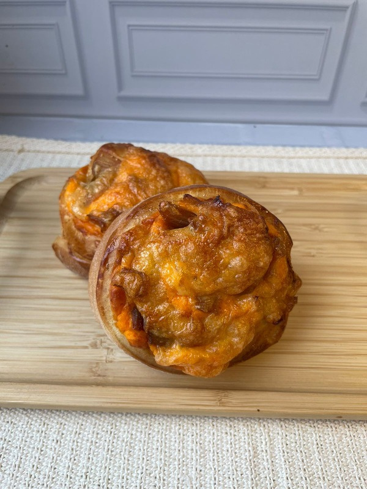
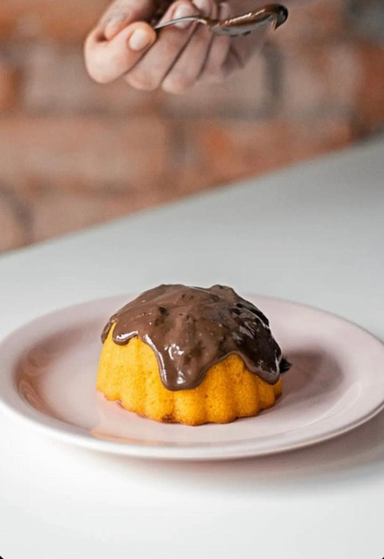
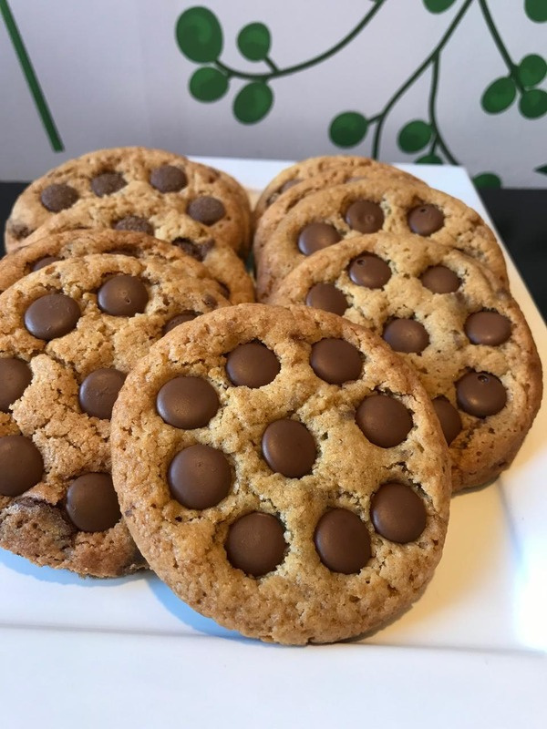

Receba primeiro as novidades da semana
O cardápio chega por ali assim que a seleção semanal é liberada.

Delivery da Semana
Como o cardápio muda semanalmente, o grupo é a forma mais rápida de acompanhar as novidades, garantir seu pedido e não perder as edições da semana.
Por que entrar no grupo
A página apresenta o clima da semana. A atualização real do delivery acontece no grupo oficial.
O cardápio chega por ali assim que a seleção semanal é liberada.
Menos fricção para descobrir o que entrou, o que voltou e o que está fazendo sucesso.
Tudo centralizado no WhatsApp da Manu Rosa Bakery, com comunicação direta e simples.
Uma forma leve de acompanhar os queridinhos e as surpresas que podem marcar presença.
Alguns favoritos da bakery
Seleções que podem aparecer no cardápio da semana. Os sabores variam, mas a experiência continua irresistível.

Favorito da bakery
Massa dourada, centro macio e aquele chocolate clássico que combina com qualquer semana.

Favorito da bakery
Cookie generoso, crosta intensa e recheio cremoso para semanas em que a indulgência fala mais alto.

Favorito da bakery
Chocolate intenso com recheio marcante e cara de sobremesa de bakery para edições especiais.

Favorito da bakery
Colorido, delicado e divertido, com textura que equilibra crocância, maciez e desejo instantâneo.

Favorito da bakery
Camadas intensas de chocolate para quem gosta de uma fatia dramática, cremosa e memorável.

Favorito da bakery
Leve, elegante e delicada, com aquele contraste que faz dela um dos queridinhos da marca.

Favorito da bakery
Massa fofinha, recheio cremoso e um perfil salgado que equilibra lindamente os pedidos mais doces.

Favorito da bakery
Sabor mais intenso, cobertura dourada e assinatura salgada para um delivery com mais personalidade.

Favorito da bakery
Pequeno no tamanho, grande no apelo visual e no conforto de um doce que parece recém-saído do forno.
Possibilidades da semana
Uma pequena amostra do que pode surgir no grupo oficial do delivery, com criações que carregam o jeito delicado e autoral da Manu Rosa Bakery.
.jpeg)
Seleção da semana
Algumas semanas chegam com criações assim: delicadas, apetitosas e cheias do carinho da bakery.
.jpeg)
Delícia da bakery
O grupo reúne as novidades da vez e mostra, em primeira mão, o que pode adoçar a semana.
.jpeg)
Possibilidade da semana
O cardápio muda com frequência, mas o cuidado com sabor, apresentação e encanto continua o mesmo.
.jpeg)
Seleção especial
Algumas delícias aparecem em edições especiais e deixam o delivery ainda mais gostoso de acompanhar.
.jpeg)
Clima da bakery
Cada semana pode trazer combinações diferentes, sempre com a identidade delicada e acolhedora da marca.
.jpeg)
Doçura da semana
Uma vitrine leve para mostrar que sempre pode existir algo novo, bonito e irresistível no grupo oficial.
Como funciona
Sem depender de PDF fixo na página. O centro da experiência agora é o grupo oficial do delivery.
O primeiro passo para acompanhar as atualizações do delivery semanal.
As informações reais entram direto no canal oficial assim que estiverem prontas.
Com mais clareza para decidir o que pedir quando a seleção for publicada.
Uma jornada direta, sem poluição visual e sem retrabalho semanal na página.
Canal oficial do delivery
Entre no grupo e acompanhe as novidades, edições especiais e delícias disponíveis do delivery da Manu Rosa Bakery.
